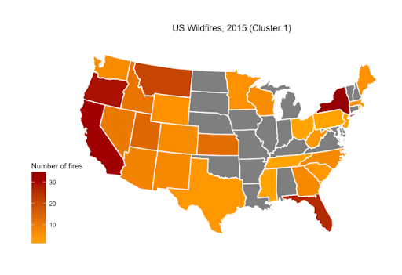
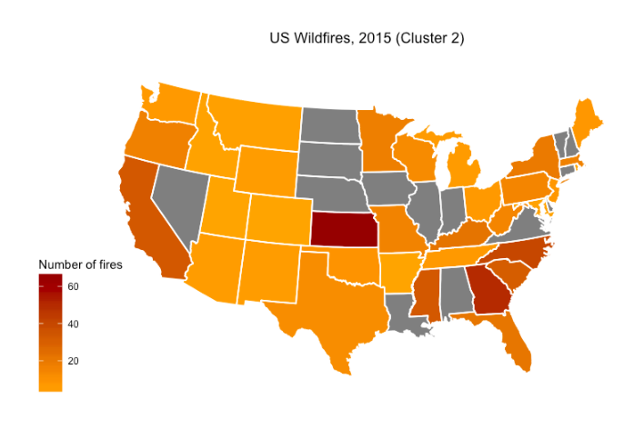
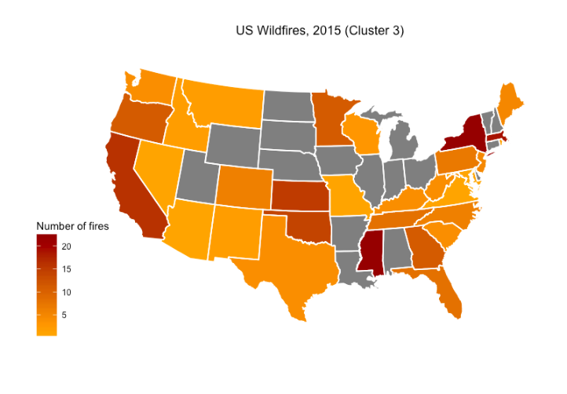
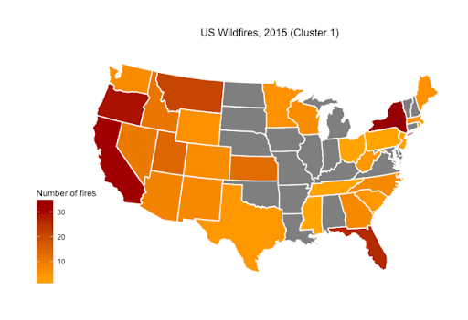
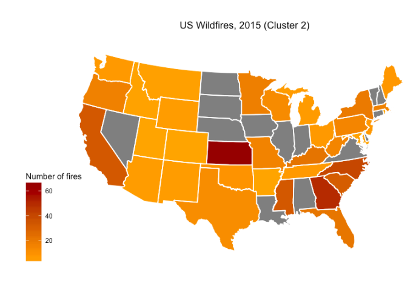
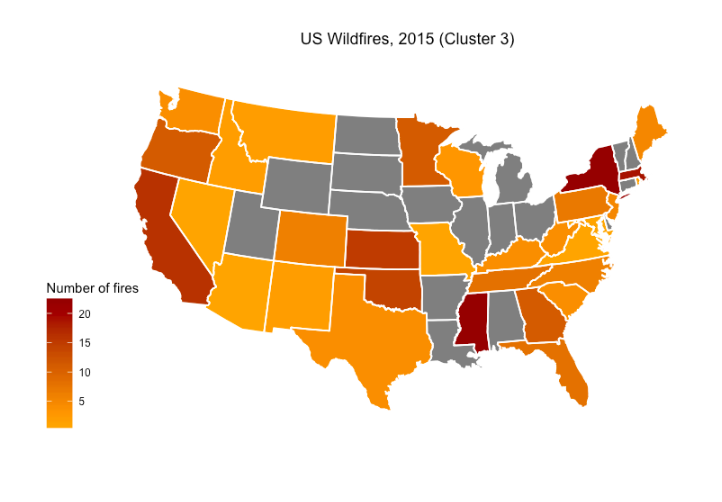
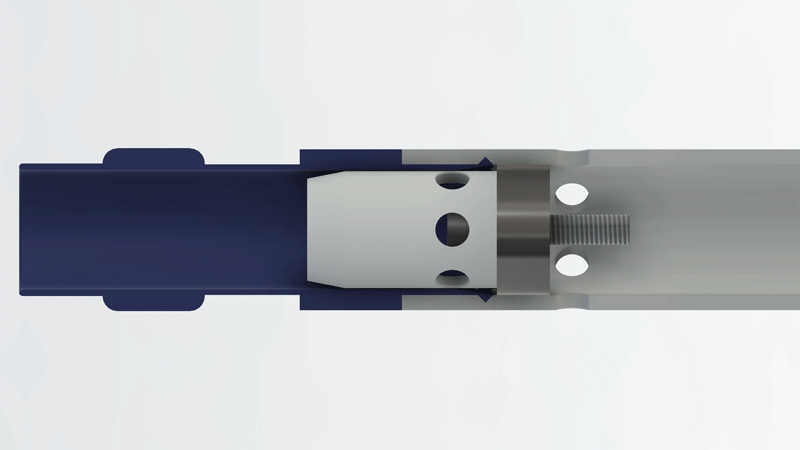

projects
CosmoVis
CosmoVis is an open-source web-based astrophysics visualization tool that facilitates the interactive analysis of large-scale hydrodynamic cosmological simulation datasets. CosmoVis enables astrophysicists as well as citizen scientists to share and explore these datasets, which are often comprised of complex, unwieldy data structures greater that 1 TB in size. Our tool visualizes a range of salient gas, dark matter, and stellar attributes extracted from the source simulations, and enables further analysis of the data using observational analogues, specifically absorption line spectroscopy. CosmoVis introduces novel analysis functionality through the use of "virtual skewers" that define a sightline through the volume to quickly obtain detailed diagnostics about the gaseous medium along the path of the skewer, including synthetic spectra that can be used to make direct comparisons with observational datasets.


DenseVos
“DenseVOS” is an installation that introduces a salient region detection, convolutional architecture (DenseCap) within an existing internationally exhibited artwork “Voice of Sisyphus” (VOS) whose major feature has been to filter selected regions of a single photographic image in varying ways to produce a 4-channel surround sound experience. This revised version uses a live camera feed to provide updated images that are then autonomously parsed by DenseCap to select the regions of interest to be filtered and audified. As the translation of image regions to audio is based on a FFT analysis of the selected regions’ pixels, the intent of the project is to explore to what degree a convolution-network based software trained on 94,000 images and 4,100,1000 region grounded captions, can deliver aesthetically interesting results given that the training has been function driven for object detection and labeling.
Process Work


Fraction8

Fraction8 was a visualization solution for hydrodynamic fluid simulations of spacecraft concept designs at JPL. In collaboration with researchers, we developed an interactive small multiple 3D visualization that could simulataneously display multiple physical parameters. One key task enabled with this tool was displaying relative ion fractions inside and outside of the spacecraft, which would measure the composition of the upper atmosphere of Venus. Using a novel 2D/3D graph implementation, relative quantitative differences are visually encoded in both color as well as height to get a more intuitive sense of different regions.
.png)
.png)
.png)

RuleVis
RuleVis, a web-based application for defining and editing "correct-by-construction" executable rules that model biochemical functionality, and which can be used to simulate the behavior of protein-protein interaction networks and other complex systems. Our application bridges the graph rewriting and systems biology research communities by providing an external visual representation of salient patterns that experts can use to determine the appropriate level of detail in a particular modeling context. This project is a collaboration between the UCSC Creative Coding Lab and the Walter Fontana Group at Harvard Medical School. Our short paper has been accepted to IEEE VIS 2019. The tool uses the same syntax from the Kappa Language, a rule-based language for modeling interacting networks.
IGM-Vis
The Intergalactic Media Visualization, or IGM-Vis, is a novel visualization and data analysis platform for investigating galaxies and the gas that surrounds them in context with their larger scale environment, the Cosmic Web. Environment is an important factor in the evolution of galaxies from actively forming stars to a quiescent state with little, if any, discernible star formation activity. The gaseous halos of galaxies (the circumgalactic medium, or CGM) play a critical role in their evolution, because the gas necessary to fuel star formation and any gas expelled from widely observed galactic winds must encounter this interface region between galaxies and the intergalactic medium (IGM).


Throw Me Away
"Throw Me Away" is a 2-minute looping video installation that was presented at UCSC's Digital Art and New Media open studio. I combined found and original recorded footage, datamoshing techniques, and an original audio accompanyment that features a corrupt virtual assistant instructing the viewer to "throw me away."

Manumorph

Style transfer, the technique by which the style of one image is applied to the content of another, is one of the most popular and well-known uses of neural network algorithms. Deep Painterly Harmonization is an extension of style transfer, but includes a content object which is placed on the style image. The network then harmonizes the style and the content. We build on Deep Painterly Harmonization, originally implemented in Torch, and re-implement the paper in Tensorflow. We extend the uses of the algorithm to explore different categories of visual media modification. We discuss the ramifications of style harmonization and style transfer on societal concepts of art, and we compare the results of the Tensorflow and Torch algorithms. Finally, we propose a design for a web application that will allow casual creators to create new art using the algorithm, without a strong technical background.

This paper is motivated by our fascination with style transfer. Both style transfer and deep painterly harmonization effect how we view visual art. Many people view famous paintings as static and unchanging. Deep Painterly Harmonization allows us to re-conceptualize this art as changeable and more relevant to current events and popular culture. We wanted to combine interesting content and style, make controversial new media, and push the harmonization process in new directions.
Leaf n' Meow

Leaf n' Meow was a final project for my Data Mining class where we wanted to predict plant toxicity to cats based on plant traits. The American Society for the Prevention of Cruelty to Animals (ASPCA) provides a list of plants that are toxic and nontoxic to cats, and we wanted to see if there were any plant-features that could be used to predict plants that do not have their cat toxicity categorized.

We trained several predictive models on plant traits taken from the TRY plant trait database and aligned them with the scientific plant names from the ASPCA. Data cleaning was non-trivial as there were many duplicate plants in both the ASPCA data as well as the TRY database. In the end we found a mix of categorical and numerical attributes that we hypothesized could be accurate in predicting plant toxicity.


Coconut Island
This is a sound recognition Unity demo I made for students in my Game Graphics lab sections. Coconuts fall from the tree at the response of the bongo drums in the audio loop that I composed and recorded with my OP-1 sampler/synthesizer. In Unity, the students had to import the demo assets (textures, shaders, objects), and modify an audio script to listen for the bongo sound. Using the sound as a trigger, they had to modify a couple of other scripts: a particle emmitter for the coconuts, and a tree shake in another script.

VR Location History

I created this VR app for my Immersive Analytics class. The goal of this project was to take some personal data and visualize it in some way. I chose my location history as tracked by Google Maps. I was able to create a 2D heatmap using the MapBox API. I extended this 2D heatmap into VR by placing virtual pins on a realistic elevation view using Unity. The user could use the controllers to navigate the digital world and view where I had been.


 





Weather Balloon Altitude Control System
One summer during undergrad I had the opportunity to work in the Far Horizons Lab at the Adler Planetarium, where I designed, built and tested an altitude control system for their weather balloon flights. Prior to this device, the team would simply overfill their helium balloons such that they would rise to the edge of the atmosphere, the balloon would grow to the size of a small house, and then pop -- dropping the payload back down to Earth, where the team would track it using GPS transmitters.
In order to sustain longer flights, I developed a helium venting system using a rubber stopper, linear actuator, pressure sensor, and an Arduino Uno. The system would start in a locked position, where the rubber stopper would seal a connection to a PVC tube attached to the balloon to prevent helium initially leaking out. As the balloon ascends, the altitude control system moves to an intermediate position where helium can vent out. Once the desired altitude is reached, the venting system goes back into the sealed position. This way, the balloon can reach neutral bouyancy in a part of the atmosphere with minimal turbulence. Once the flight is complete, the system moves the stopper to a final position, whereby the PVC insert has enough space to detatch from the balloon.


Predicting Clinical Outcomes from Patient Data

For my Data Analysis and Regression final project I found a publicly available dataset of Non-Small Cell Lung Cancer (NSCLC) Patient Data from the National Center for Biotechnology Information (NCBI), then trained and tested a logistic regression model to predict patient survival using R. The dataset contained data from 478 patients with 28 different variables. I created several survival analysis plots comparing gender and smoking-status to survival probability.
I found that gender, age of diagnosis, race, adjuvant radiotherapy, time to first progression or relapse, months to last clinical assessment, and lymph node involvement to be the most predictive factors.